PARTICIPATORY SOUND PROJECT
Opéra Bempt
Voyage de Souvenirs à Vapeur
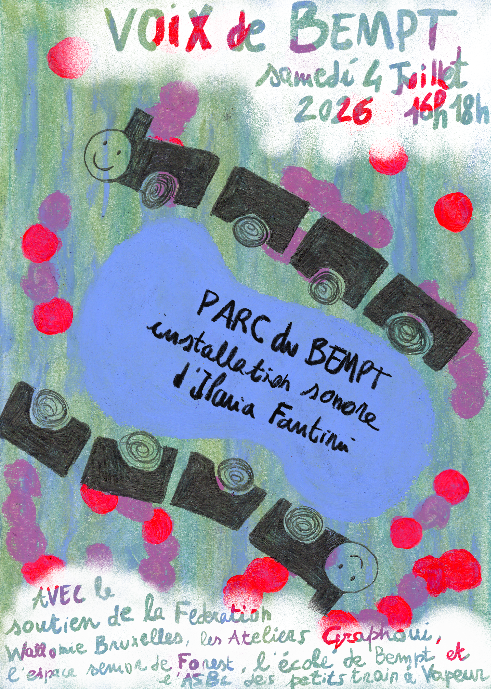
Opéra Bempt — Voyage de Souvenirs à Vapeur is a participatory and intergenerational project developed in and around Bempt Park in Forest, Brussels.
Through radio, field recording, music, drawing and writing workshops, children, senior residents and inhabitants of the neighbourhood explored the park through its memories, sounds, stories, fauna and flora.
Personal recollections, everyday observations and environmental recordings became material for collective narratives, sound compositions and imaginary cartographies.
The project culminated in a public installation and live radio performance around the miniature railway of Bempt Park, transforming the site into a moving landscape of voices, sounds and stories.
PROCESS
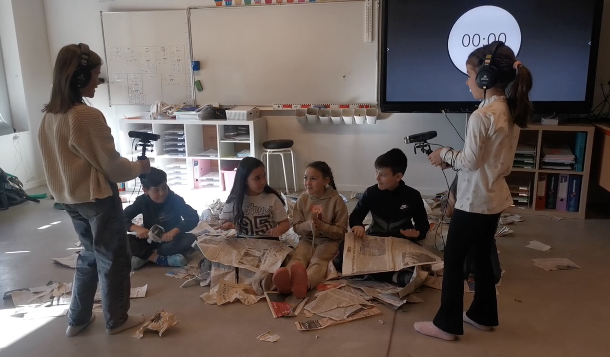
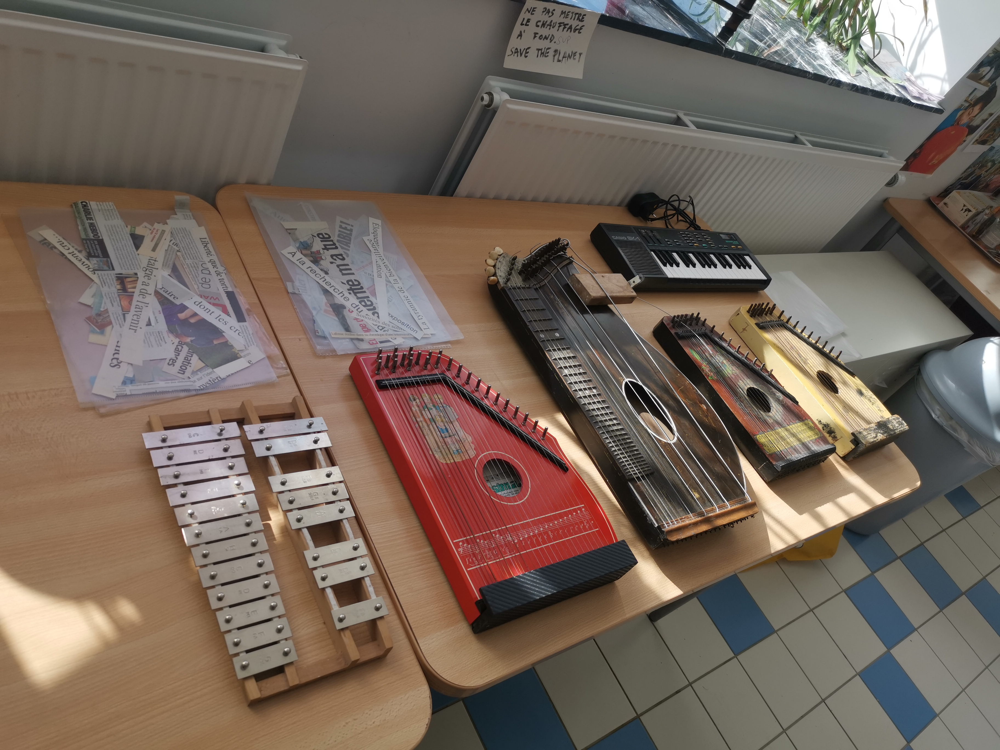
Recording, listening and collective experimentation formed the basis of the sound workshops.
Participants explored voices, environmental sounds and musical materials, gradually building a shared collection of recordings.
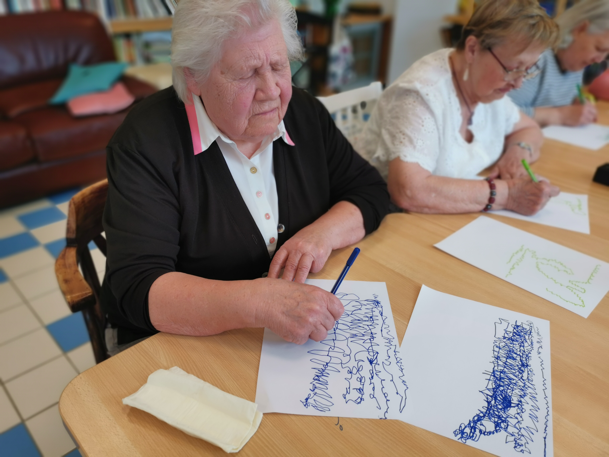
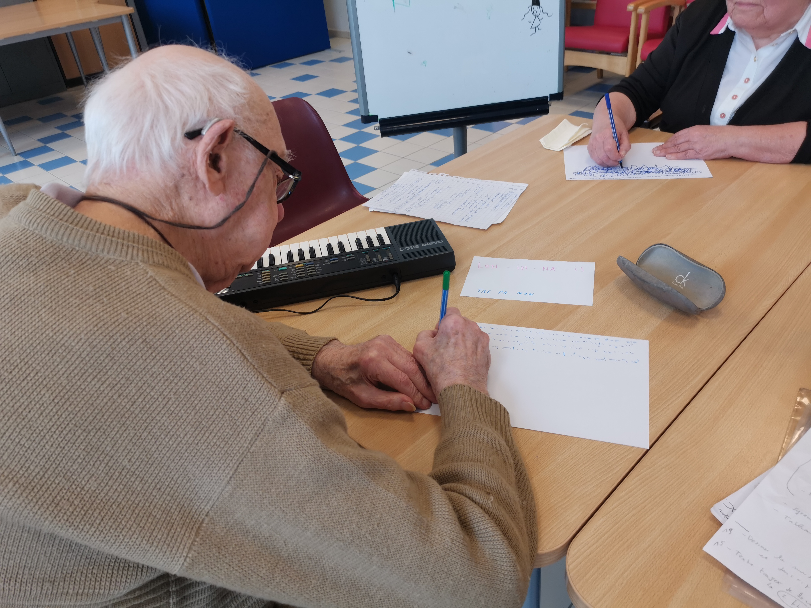
FINAL INSTALLATION / BEMPT PARK
The project concluded with a public presentation in Bempt Park, combining sound installation, live interventions, radio, collected stories and traces from the workshops.
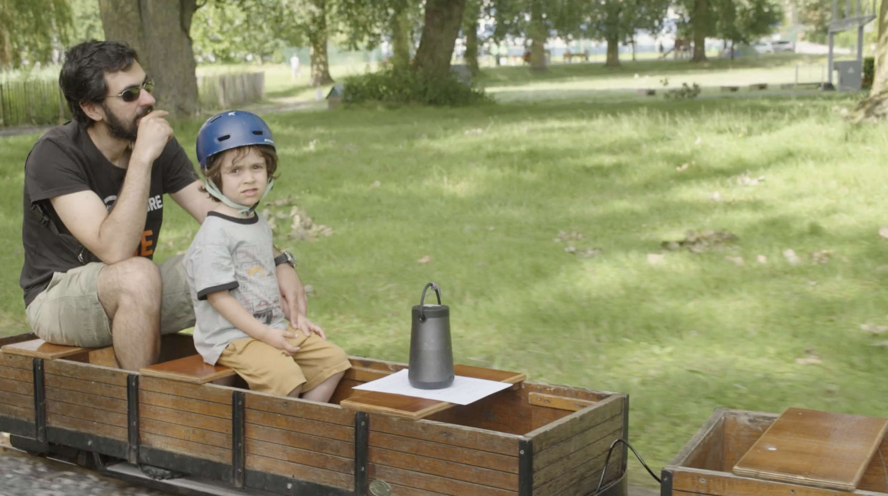
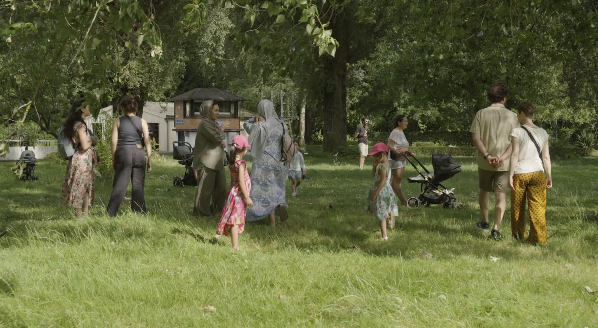
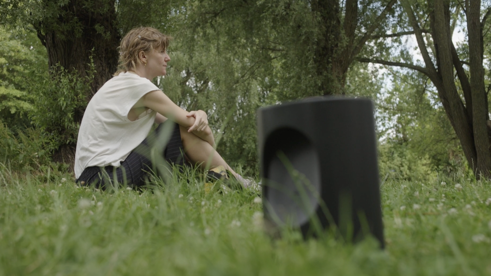
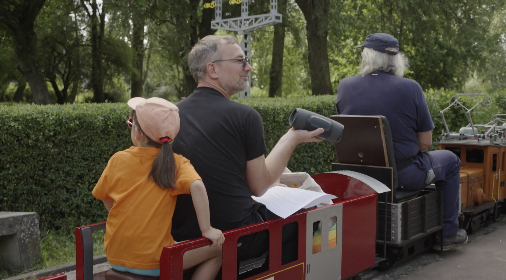
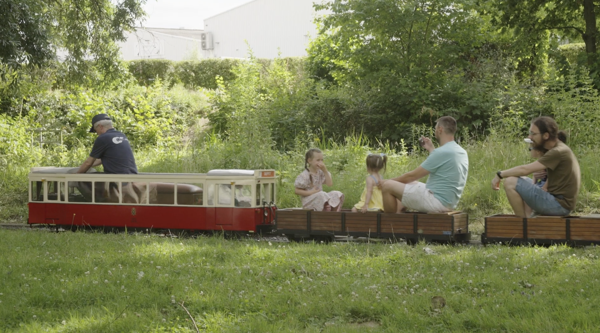
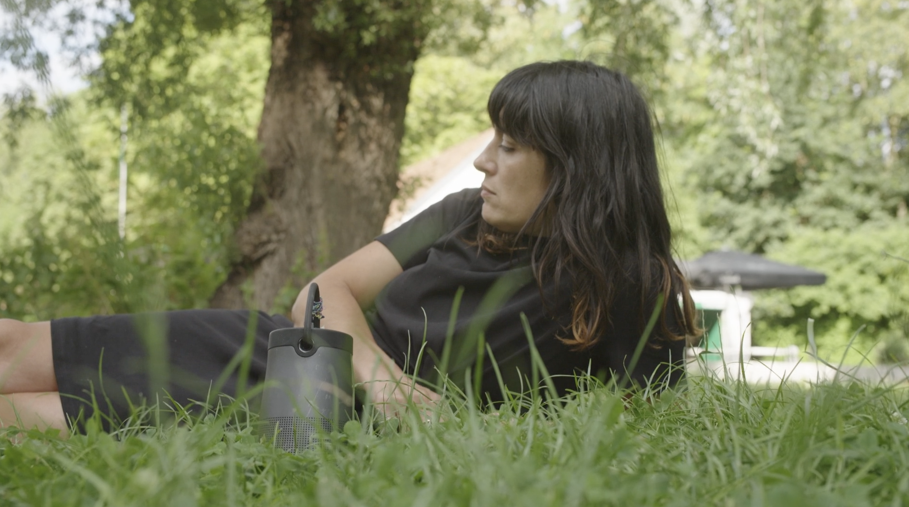
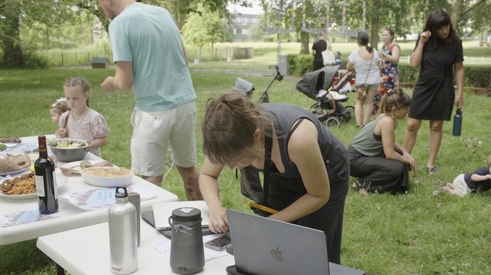
SOUND INSTALLATION / LIVE COMPOSITION
The final installation explored the miniature steam railway as a moving listening device. Portable speakers were placed on the small trains, allowing a live sound montage to circulate physically through Bempt Park as the trains moved along the tracks.
After a collective listening session experienced from the trains and from different points around the railway, the project shifted into a moment of collective improvisation.
Participants could play with, combine and reorganise fragments recorded during the workshops, transforming the accumulated material into a shared and evolving sound composition.
INTERACTIVE SOUND ARCHIVE
I developed and coded a web-based interface using the raw sound material collected throughout the workshops.
Rather than presenting the recordings as a fixed archive, the interface allows users to select fragments, assemble playlists, change their order and generate different listening sequences.
The sounds remain available as reusable material: fragments that can be recombined, played with and activated in different situations.
The interface was conceived as an evolving tool that can continue to be developed and adapted for future collective listening, performances and workshop contexts.
→ open the interactive sound archiveARTISTIC DIRECTION & COLLABORATION
Ilaria Fantini
Concept, artistic direction, project development and coordination, workshop design and facilitation, radio and field recording, visual arts, sound editing, installation, web development and overall production.
Juliette Thomas
Assistance in the facilitation of selected sound and music workshops.
Tom Gineyts
Photography and video documentation of the sound installation.
PARTNERS / NETWORK
École de Bempt
Espace Senior de Forest
Habitat et Rénovation
Contrat de Quartier des Deux Cités
Bibliothèque de Forest
CPAS de Forest
Graphoui
Petits Trains à Vapeur
Radio Campus / Improducation
p-node